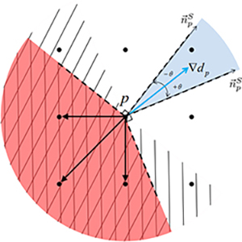
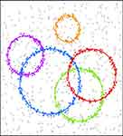
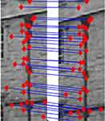
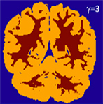
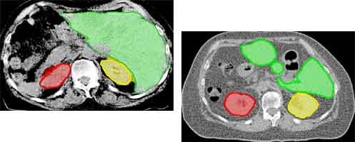
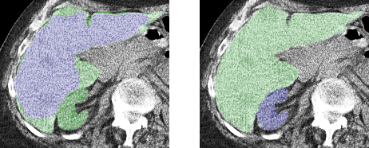
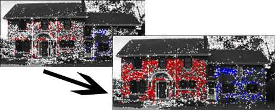
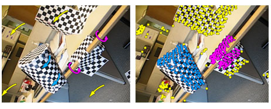
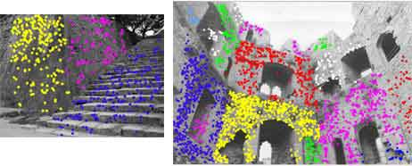
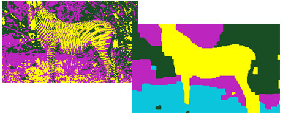

Hossam Isack
I received my PhD and MSc in Computer Science from the University of Western Ontario under the supervision of Yuri Boykov.
Research Highlights

Hedgehog shape prior
Hedgehog shape prior

Robust multi-model fitting
Robust multi-model fitting

Joint fitting & matching
Joint fitting & matching

Correcting volumetric bias
Correcting volumetric bias
Publications
Conference
- 
Hossam Isack, Olga Veksler, Milan Sonka, and Yuri Boykov.
Hedgehog Shape Priors for Multi-object Segmentation.
In IEEE Conference on Computer Vision and Pattern Recognition (CVPR), 2016 (short-oral).
[PDF] [Abstract] [Bibtex] [Video]@inproceedings{isackhedgehog, title={Hedgehog Shape Priors for Multi-object Segmentation}, author={Isack, Hossam and Veksler, Olga and Sonka, Milan and Boykov, Yuri}, booktitle = {IEEE Conference on Computer Vision and Pattern Recognition}, year = {2016}}Star-convexity prior is popular for interactive single object segmentation due to its simplicity and amenability to binary graph cut optimization. We propose a more general multi-object segmentation approach. Moreover, each object can be constrained by a more descriptive shape prior, “hedgehog”. Each hedgehog shape has its surface normals locally constrained by an arbitrary given vector field, e.g. gradient of the user-scribble distance transform. In contrast to star-convexity, the tightness of our normal constraint can be changed giving better control over allowed shapes. For example, looser constraints, i.e. wider cones of allowed normals, give more relaxed hedgehog shapes. On the other hand, the tightest constraint enforces skeleton consistency with the scribbles. In general, hedgehog shapes are more descriptive than a star, which is only a special case corresponding to a radial vector field and weakest tightness. Our approach has significantly more applications than standard single star-convex segmentation, e.g. in medical data we can separate multiple non-star organs with similar appearances and weak edges. Optimization is done by our modified α-expansion moves shown to be submodular for multi-hedgehog shapes.
- 
Yuri Boykov, Hossam Isack, Carl Olsson, and Ismail Ben Ayed.
Volumetric Bias in Segmentation and Reconstruction: Secrets and Solutions.
In IEEE International Conference on Computer Vision (ICCV), 2015..
[PDF] [Abstract] [Bibtex]@InProceedings{boykovvolbias, author = {Boykov, Yuri and Isack, Hossam and Olsson, Carl and Ben Ayed, Ismail}, title = {Volumetric Bias in Segmentation and Reconstruction: Secrets and Solutions}, booktitle = {The IEEE International Conference on Computer Vision (ICCV)}, month = {December}, year = {2015}}Many standard optimization methods for and reconstruction compute ML model estimates for appearance or geometry of segments, e.g. (Zhu and Yuille 1996), (Torr 1998), (Chan and Vese 2001), GrabCut , (Delong et al. 2012). We observe that the standard likelihood term in these formulations corresponds to a generalized probabilistic K-means energy. In learning it is well known that this energy has a strong bias to clusters of equal size, which we express as a penalty for KL divergence from a uniform distribution of cardinalities. However, this volumetric bias has been mostly ignored in computer vision. We demonstrate significant artifacts in standard segmentation and reconstruction methods due to this bias. Moreover, we propose binary and multi-label optimization techniques that either (a) remove this bias or (b) replace it by a KL divergence term for any given target volume distribution. Our general ideas apply to continuous or discrete energy formulations in segmentation, stereo, and other reconstruction problems.
- 
Hossam Isack and Yuri Boykov.
Energy Based Multi-model Fitting & Matching for 3D Reconstruction.
In IEEE Conference on Computer Vision and Pattern Recognition (CVPR), 2014 ( oral).
[PDF] [Abstract] [Bibtex] [Talk]@inproceedings{isack2014energy, title={Energy Based Multi-model Fitting \& Matching for 3D Reconstruction}, author={Isack, Hossam and Boykov, Yuri}, booktitle={ IEEE Conference on Computer Vision and Pattern Recognition (CVPR)}, year={2014}}Standard geometric model fitting methods take as an input a fixed set of feature pairs greedily matched based only on their appearances. Inadvertently, many valid matches are discarded due to repetitive texture or large baseline between view points. To address this problem, matching should consider both feature appearances and geometric fitting errors. We jointly solve feature matching and multi-model fitting problems by optimizing one energy. The formulation is based on our generalization of the assignment problem and its efficient mincost-max-flow solver. Our approach significantly increases the number of correctly matched features, improves the accuracy of fitted models, and is robust to larger baselines.
- 
Andrew Delong, Anton Osokin, Hossam Isack and Yuri Boykov.
Fast approximate energy minimization with label costs.
In IEEE Conference on Computer Vision and Pattern Recognition (CVPR), 2010.
[PDF] [Abstract] [Bibtex] [Code]@inproceedings{labelcostCVPR2010, title={Fast approximate energy minimization with label costs}, author={Delong, Andrew and Osokin, Anton and Isack, Hossam N and Boykov, Yuri}, booktitle={IEEE Conference on Computer Vision and Pattern Recognition}, year={2010}}The α-expansion algorithm has had a significant impact in computer vision due to its generality, effectiveness, and speed. Thus far it can only minimize energies that involve unary, pairwise, and specialized higher-order terms. Our main contribution is to extend α-expansion so that it can simultaneously optimize “label costs” as well. An energy with label costs can penalize a solution based on the set of labels that appear in it. The simplest special case is to penalize the number of labels in the solution. Our energy is quite general, and we prove optimality bounds for our algorithm. A natural application of label costs is multi-model fitting, and we demonstrate several such applications in vision: homography detection, motion segmentation, and unsupervised image segmentation. Our C++/MATLAB implementation is publicly available.
Journals
- 
Hossam Isack and Yuri Boykov.
Energy-based geometric multi-model fitting.
In International journal of computer vision.
[PDF] [Abstract] [Bibtex]@article{pearlIJCV12, author = {Hossam Isack and Yuri Boykov}, title = {Energy-based Geometric Multi-Model Fitting}, journal = {International Journal of Computer Vision}, volume = {97}, issue = {2}, pages = {123--147}, month = {April}, year ={2012}}Geometric model fitting is a typical chicken & egg problem: data points should be clustered based on geometric proximity to models whose unknown parameters must be estimated at the same time. Most existing methods, including generalizations of RANSAC, greedily search for models with most inliers (within a threshold) ignoring overall classification of points. We formulate geometric multi-model fitting as an optimal labeling problem with a global energy function balancing geometric errors and regularity of inlier clusters. Regularization based on spatial coherence (on some near-neighbor graph) and/or label costs is NP hard. Standard combinatorial algorithms with guaranteed approximation bounds (e.g. α-expansion) can minimize such regularization energies over a finite set of labels, but they are not directly applicable to a continuum of labels, e.g. R2 in line fitting. Our proposed approach (PEARL) combines model sampling from data points as in RANSAC with iterative re-estimation of inliers and models parameters based on a global regularization functional. This technique efficiently explores the continuum of labels in the context of energy minimization. In practice, PEARL converges to a good quality local minimum of the energy automatically selecting a small number of models that best explain the whole data set. Our tests demonstrate that our energy-based approach significantly improves the current state of the art in geometric model fitting currently dominated by various greedy generalizations of RANSAC.
- 
Andrew Delong, Anton Osokin, Hossam Isack and Yuri Boykov.
Fast approximate energy minimization with label costs.
In International journal of computer vision.
[PDF] [Abstract] [Bibtex] [Code]@article{labelcostIJCV2012, title={Fast approximate energy minimization with label costs}, author={Delong, Andrew and Osokin, Anton and Isack, Hossam N and Boykov, Yuri}, journal={International journal of computer vision}, volume={96}, number={1}, pages={1--27}, year={2012}, publisher={Springer}}The α-expansion algorithm has had a significant impact in computer vision due to its generality, effectiveness, and speed. It is commonly used to minimize energies that involve unary, pairwise, and specialized higher-order terms. Our main algorithmic contribution is an extension of α-expansion that also optimizes “label costs” with wellcharacterized optimality bounds. Label costs penalize a solution based on the set of labels that appear in it, for example by simply penalizing the number of labels in the solution. Our energy has a natural interpretation as minimizing description length (MDL) and sheds light on classical algorithms like K-means and expectation-maximization (EM). Label costs are useful for multi-model fitting and we demonstrate several such applications: homography detection, motion segmentation, image segmentation, and compression. Our C++ and MATLAB code is publicly available.
Tech Reports
-
A-expansion for multiple" hedgehog" shapes, Hossam Isack , Yuri Boykov, and Olga Veksler.
[PDF] [Bibtex]@techreport{hedgehogsTR2016, title={A-expansion for multiple" hedgehog" shapes}, author={Isack, Hossam and Boykov, Yuri and Veksler, Olga}, journal={arXiv:1602.01006}, year={2016}} -
Volumetric Bias in Segmentation and Reconstruction: Secrets and Solutions, Yuri Boykov, Hossam Isack, Carl Olsson, and Ismail Ayed.
[PDF] [Bibtex]@techreport{volbiasTR2016, title={Volumetric Bias in Segmentation and Reconstruction: Secrets and Solutions}, author={Boykov, Yuri and Isack, Hossam and Olsson, Carl and Ben Ayed, Ismail}, journal={arXiv:1505.00218}, year={2015}} -
Joint optimization of fitting & matching in multi-view reconstruction, Hossam Isack and Yuri Boykov.
[PDF] [Bibtex]@techreport{fmTR2013, title={Joint optimization of fitting \& matching in multi-view reconstruction}, author={Isack, Hossam and Boykov, Yuri}, institution={Computer Science Department, University Of Western Ontario}, number = {755}, month={February}, year={2013}} -
Fast approximate energy minimization with label costs, Andrew Delong, Anton Osokin, Hossam Isack and Yuri Boykov.
[PDF] [Bibtex] [Code]@techreport{labelcostTR2009, title={Fast approximate energy minimization with label costs}, author={Delong, Andrew and Osokin, Anton and Isack, Hossam N and Boykov, Yuri}, institution={Computer Science Department, University Of Western Ontario}, number = {731}, month={December}, year={2009}}
Teaching
University of Western Ontario
- [CS2210] Data Structures and Algorithms Data Structures and Algorithms (C++) - Olga Veksler (Winter '14)
- [CS2212] Introduction to Software Engineering - Laura Reid (Winter '13)
- [CS1037] Computer Science Fundamentals II (C++) - Yuri Boykov (Fall 11, Fall 12))
- [CS1033] Multimedia and Communications - Laura Reid and Vivi Tryphonopoulos (Winter 08 to Winter 11)
AAST
- [CS405] System Modeling and Simulation - Walid Gomaa (Fall '08)
- [CC416] Introduction to Computer Graphics (OpenGL) - Taher El-sonne (Winter '07 - Fall '08)
- [CS301] Numerical Methods - Ayman Adel (Winter, Fall '07)
- [CS143] Introduction to Problem Solving and Programming (C++) - Hesham Soliman (Fall '08)
Alexandria University
- Introduction to Computer Programming (Fall '08)
-
A-expansion for multiple" hedgehog" shapes, Hossam Isack , Yuri Boykov, and Olga Veksler.